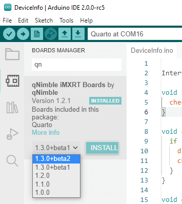

Want to get the latest Arduino Quarto software? Then change the board mananger URL from https://qnimble.com/package_qnimble_index.json to
https://qnimble.com/package_qnimble_beta_index.json
Then restart the Arduino IDE and when you go to the board manager, you will see options to install beta versions of our latest software.
For detailed instructions, follow the Quick Start Guide but use the beta URL listed above. For information about the latest (beta and released) software and new features, see the announcements page on the forum.